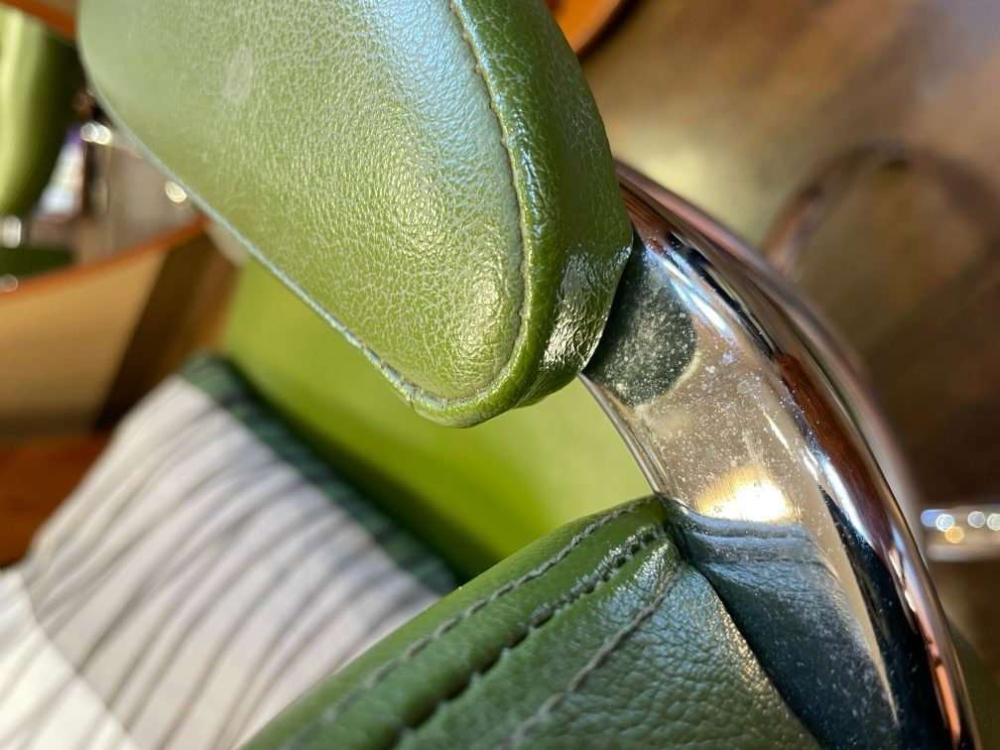
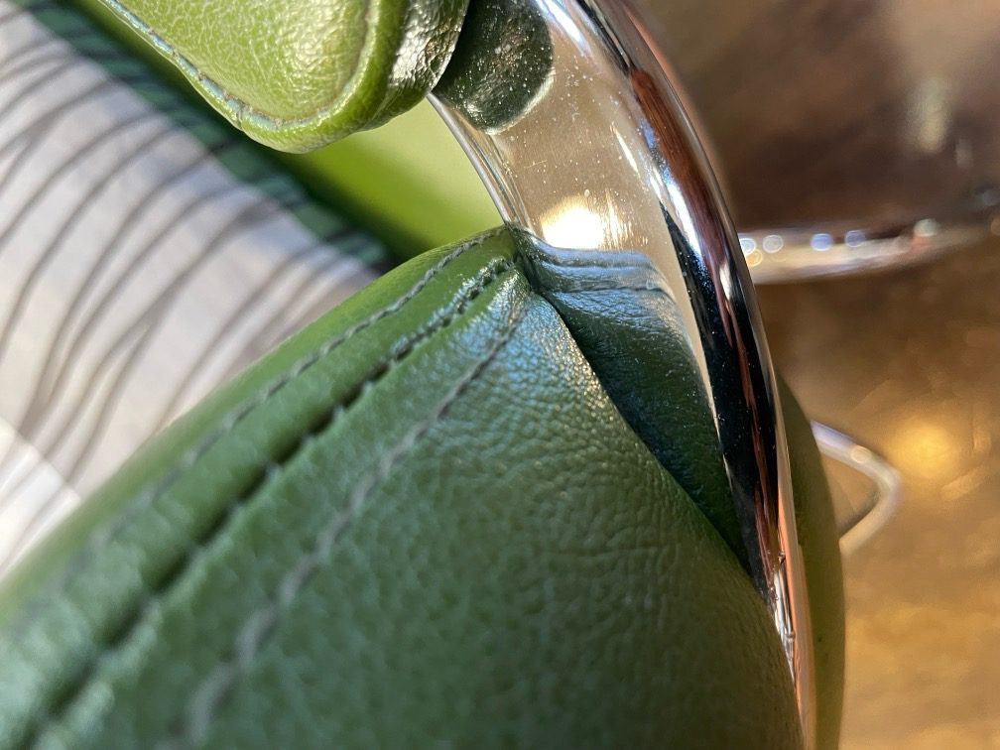
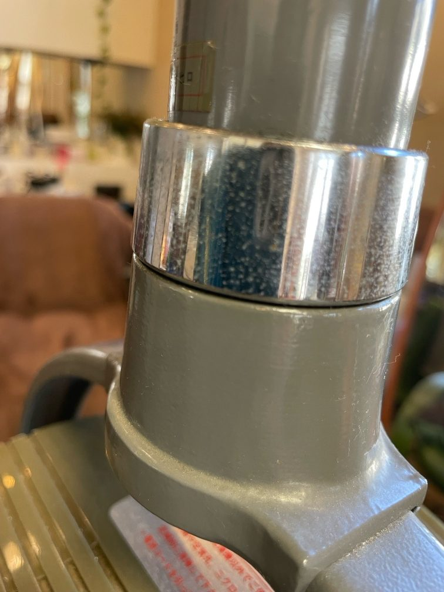
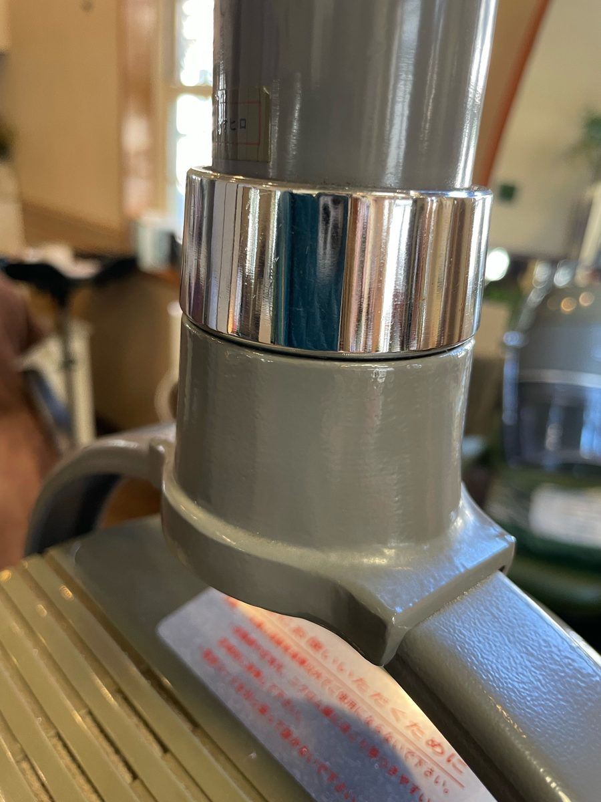
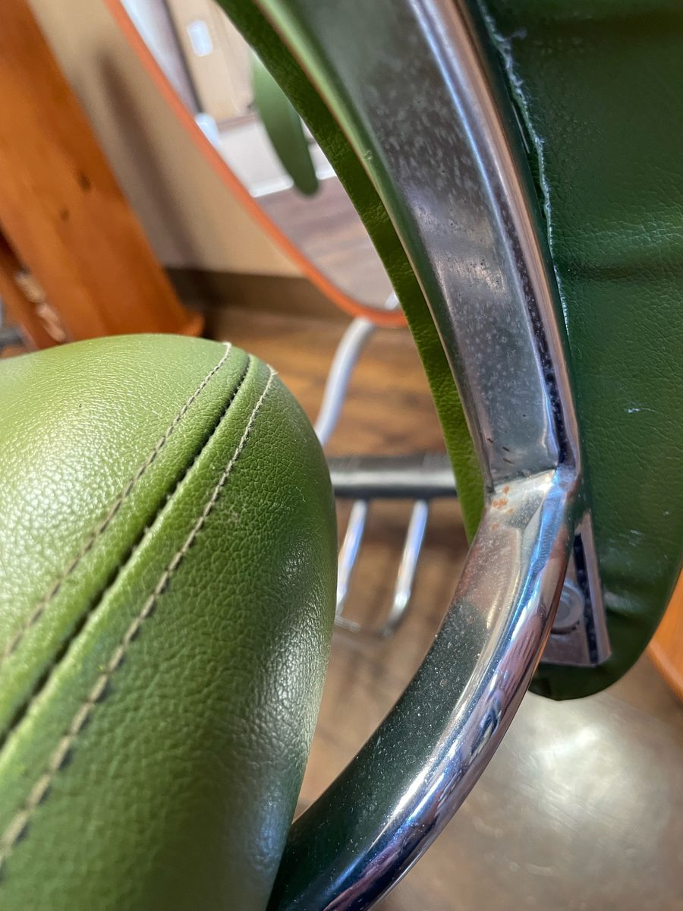
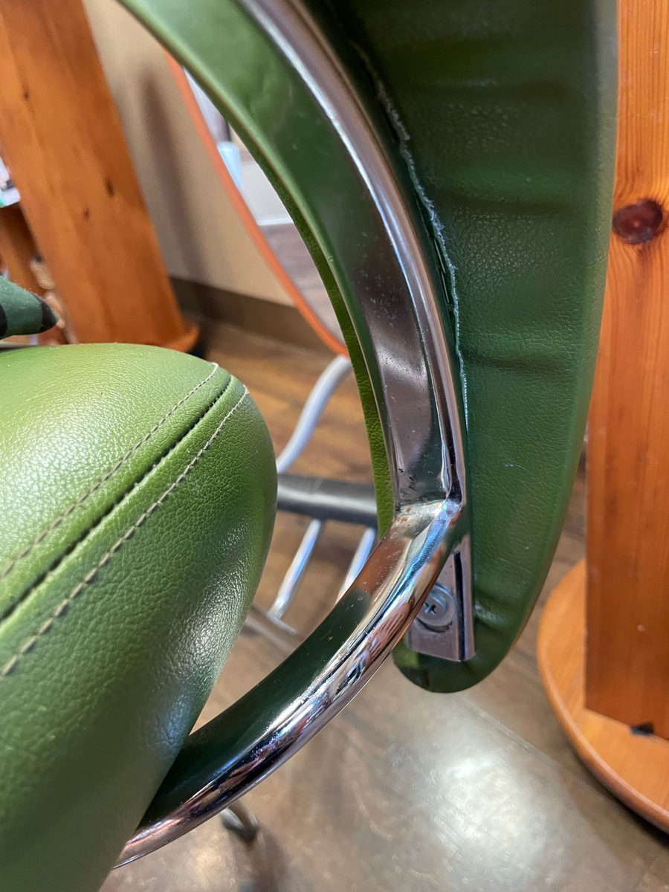
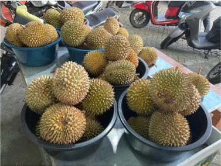
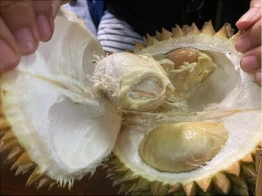
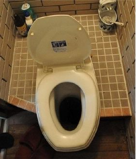

01
衣類の襟の汗染み
衣類の襟の汗染みを、りふれウォーターと洗剤で洗った実際の写真です。資料では「襟の汗染みがキレイに」と紹介されています。


お風呂・衣類・お掃除など、暮らしの「洗う」に。
水回りや家具など、日常の拭き掃除に。
洗剤と一緒に、衣類の洗濯に。
食器洗い洗剤(石鹸を除く)・洗濯洗剤・柔軟剤を、りふれウォーターと半分ずつ混ぜて使う方法も紹介されています。
旅行中の衣類や、ニオイが気になる衣類のお手入れに。
靴の洗浄や、ニオイが気になる場面での活用。
ニオイが気になる空間に、スプレーして。
いつもの浴槽で、週に一度のバスタイムを。お風呂
衣類の襟の汗染みを、りふれウォーターと洗剤で洗った実際の写真です。資料では「襟の汗染みがキレイに」と紹介されています。
美容室の椅子など、薬剤が飛び散ってくすみやボツボツが残っていた金属部分を、りふれウォーターで拭いた実例です。






サロンは色々と薬剤とかが飛び散るので、金属部分が直ぐくすんでしまうんです。金属磨きで擦ったりしても、艶は出るけど、ボツボツが取れなかった。なのに水で何度か拭いてたら、ボツボツまで綺麗に取れてしまいびっくり!!
美容室でのご利用
美容室に充満したドリアンのニオイや、汲み取り式トイレで、空間にスプレーした使用例です。



美容室にドリアンの臭いが充満し、まるで臭いテロ!!(中略)最後に、りふれを空間にスプレーしたら、一瞬で臭いが消えた!!
ボットン便所(汲み取り式トイレ)。空間にスプレーして3秒で臭いが消えて、消臭スプレーの臭いだけになり、びっくり!!
美容室・ご家庭でのご利用
※実際の使用者から寄せられた感想を紹介しています。消臭性能を保証するものではありません。
加湿器に入れて使用した美容室で、カットクロスに髪が付着しにくくなったという使用者の感想です。
加湿器にも入れてるんですが、店でお客様をカットした後、クロスの毛を払うとき、静電気でクロスに毛がいっぱい付いたままで取れなかったのですが、何も毛が付かないんです。加湿器を付けてる時、消してる時、何度か試したらやっぱり付かない!凄いです。
美容室でのご利用
※実際の使用者から寄せられた感想です。使用環境によって感じ方は異なります。
※お客様の声は個人の感想です。使用環境・使用方法などにより、感じ方や結果は異なります。